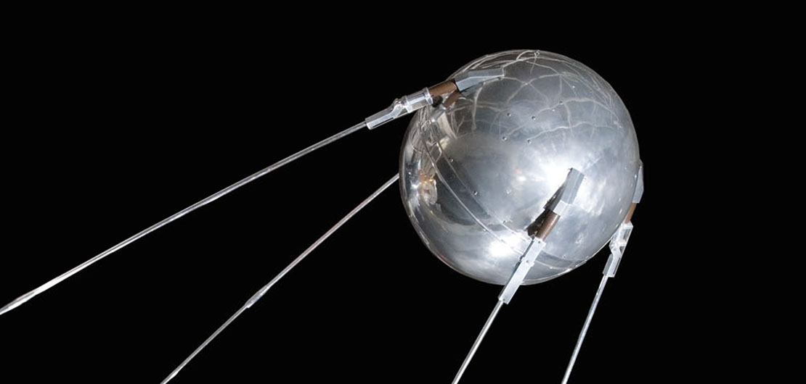
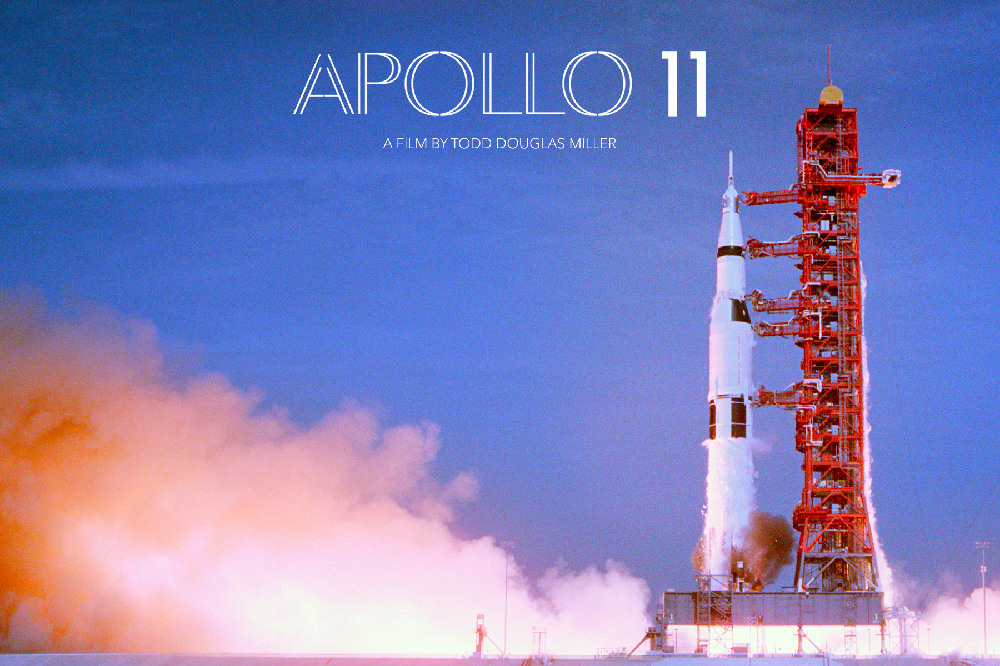
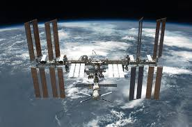
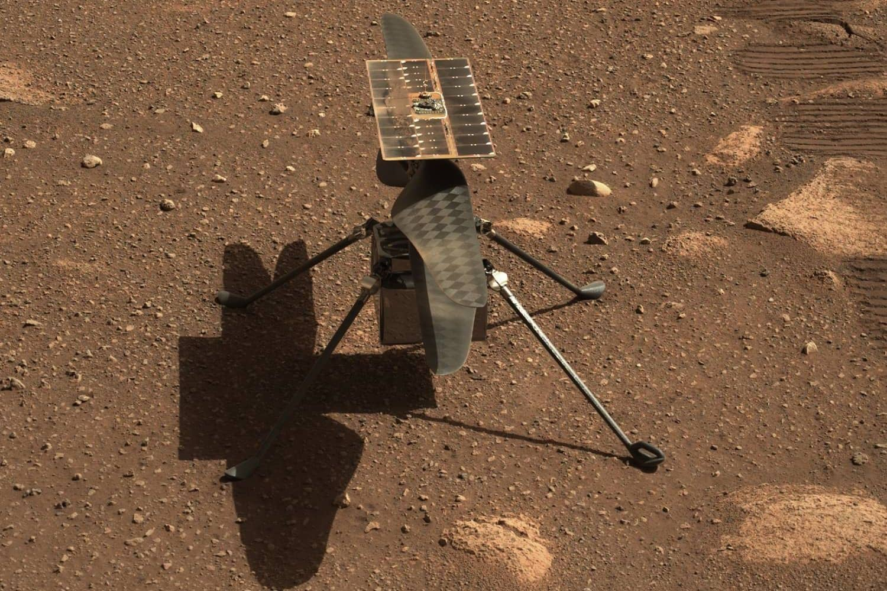

Kluczowe Wydarzenia

1957
Pierwszy sztuczny satelita: Sputnik 1 został wystrzelony przez ZSRR.

1961
Jurij Gagarin został pierwszym człowiekiem w kosmosie.

1969
Apollo 11: Neil Armstrong postawił pierwszy krok na Księżycu.

2000
Początek stałej obecności ludzi na Międzynarodowej Stacji Kosmicznej (ISS).

2021
Pierwszy lot na Marsa: Perseverance Rover ląduje na powierzchni Marsa.